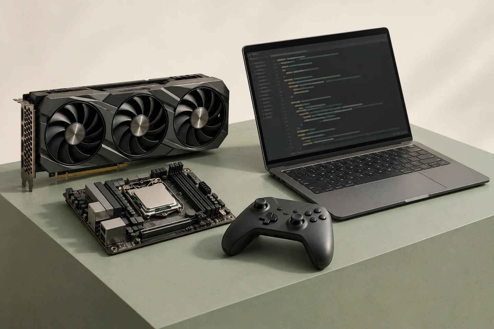
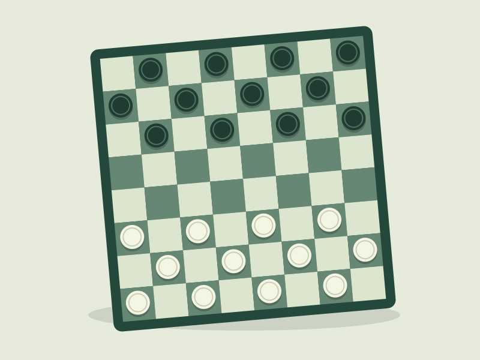

Код. Логика.
Қызығушылық.
Бос уақыттағы хоббилерім және қызығушылықтарым.
Python:
идеядан кодқа.
Python — мені қызықтыратын бағдарламалау тілдерінің бірі. Маған бағдарламалау логикасы мен алгоритмдер тақырыбы қызықты.
# Қарапайым танысу мысалы
name = "Тілек"
subject = "Информатика"
print(f"Сәлем, мен {name}!")
print(subject)▌kali / linux
Kali Linux:
жүйені түсіну.
Kali Linux — менің хоббилерімнің бірі. Linux ортасы, командалық жол және ақпараттық қауіпсіздік тақырыптары қызықтырады.
Компьютердің
ішкі әлемі.
Ойындардан кейінгі қызығушылығым — компьютер бөлшектері. Процессорлар мен видеокарталардың мүмкіндіктері, олардың қызметі мен өзара үйлесімділігі қызықтырады.
Процессор
Бағдарлама нұсқауларын орындайды және есептеулер жүргізеді. Оның мүмкіндігі компьютердің көптеген тапсырмаларды орындауына әсер етеді.


Дойбы:
бір жүріс алда.
Дойбы — бос уақытта ойнағанды ұнататын ойыным. Әр жүрісті ойластыру, қарсыластың қадамын болжау және дұрыс сәтті күту қызықты.
Компьютерлерге қызығушылығым мен дойбыны біріктіретін нәрсе — логика, зейін және шешім іздеу.